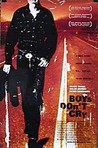
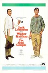
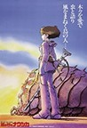
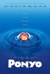
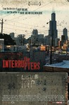
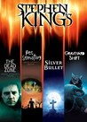
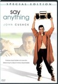
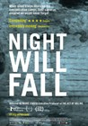

Movie Releases By Score


|
401.
Boys Don't Cry
Release Date:
October 8, 1999
Based on a true story, Brandon Teena (Swank) is the popular new "guy" in a tiny Nebraska town and falls in love with local girl Lana (Sevigny). When it is revealed that Brandon is actually a woman, Lana's family and friends put Brandon's life in jeopardy.
|

|
402.
Dead Ringers
Release Date:
September 23, 1988

The chilling story of identical twin gynecologists--suave Elliot and sensitive Beverly, bipolar sides of one personality--who share the same practice, the same apartment, the same women. When a new patient, glamorous actress Claire Niveau, challenges their eerie bond, they descend into a whirlpool of sexual confusion, drugs, and madness. Jeremy Irons' tour-de-force performance--as both twins?raises disturbing questions about the nature of personal identity. (Criterion Collection)
|

|
403.
Manakamana
Release Date:
April 18, 2014
High above a jungle in Nepal, pilgrims make an ancient journey by cable car to worship Manakamana.
|
|
|
404.
Mission: Impossible – Fallout
Release Date:
July 27, 2018

The best intentions often come back to haunt you. Mission: Impossible – Fallout finds Ethan Hunt (Tom Cruise) and his IMF team (Alec Baldwin, Simon Pegg, Ving Rhames) along with some familiar allies (Rebecca Ferguson, Michelle Monaghan) in a race against time after a mission gone wrong. Henry Cavill, Angela Bassett, and Vanessa Kirby also join the dynamic cast with filmmaker Christopher McQuarrie returning to the helm.
|
|
|
405.
Rushmore
Release Date:
December 11, 1998
Max Fischer, a tenth grade scholarship student at Rushmore Academy, falls in love with Rosemary Cross, a widowed elementary school teacher, but his friendship with Herman Blume, an unhappy, wealthy industrialist, suffers when Blume falls for Miss Cross as well.
|

|
406.
Cave of Forgotten Dreams
Release Date:
April 29, 2011
For over 20,000 years, Chauvet Cave has been completely sealed off by a fallen rock face, its crystal-encrusted interior as large as a football field and strewn with the petrified remains of giant ice age mammals. In 1994, scientists discovered the caverns, and found hundreds of pristine paintings within, spectacular artwork dating back over 30,000 years (almost twice as old as any previous finds) to a time when Neanderthals still roamed the earth and cave bears, mammoths, and ice age lions were the dominant populations of Europe. Since then, only a handful of specialists have stepped foot in the cave, and the true scope of its contents had largely gone unfelt—until Werner Herzog managed to gain access. Filming in 3D, Herzog captures the wonder and beauty of one of the most awe-inspiring sites on earth, all the while musing in his inimitable fashion about its original inhabitants, the birth of art, and the curious people surrounding the caves today. (IFC Films)
|
|
|
407.
My Neighbor Totoro
Release Date:
April 16, 1988

When two girls move to the country to be near their ailing mother, they have adventures with the wondrous forest spirits who live nearby.
|
408.
King of the Hill
Release Date:
August 20, 1993
Based on A. E. Hotchner's memoir, this coming-of-age story follows Aaron Kurlander (Jesse Bradford) as he struggles to survive on his own while his traveling salesman father is away and his mother is committed to a sanatorium with tuberculosis.
|
|

|
409.
The Red Turtle
Release Date:
January 20, 2017

Through the story of a man shipwrecked on a tropical island inhabited by turtles, crabs and birds, The Red Turtle recounts the milestones in the life of a human being.
|
410.
My Happy Family
Release Date:
December 1, 2017
On the evening of her 52nd birthday, Georgian literature teacher Manana unexpectedly announces to her family that she is leaving. She has been married for 30 years and lives in a three-bedroom flat in Tbilisi with her husband, parents, two children and her son-in-law.The members of her family represent three generations and are completely different from each other: Manana's husband Soso (55); their daughter Nino (24), who is married and adores her husband Vakho (27); Manana's son Lasha (20); Manana's mother Lamara (72), the pillar of the family who takes care of everybody; and Manana's father Otar (80), who after a long and exhausting life, dreams of death which seems slow in coming. Initially, the family don't take Manana's decision seriously. But then she packs her suitcase and leaves. The family is shocked and incredulous: where is she going? Who upset her? She is past 'divorce age' after all, and has a good husband who doesn’t drink, take drugs or beat her.
|
|

|
411.
Chasing Coral
Release Date:
July 14, 2017
Coral reefs are the nursery for all life in the oceans, a remarkable ecosystem that sustains us. Yet with carbon emissions warming the seas, a phenomenon called “coral bleaching”—a sign of mass coral death—has been accelerating around the world, and the public has no idea of the scale or implication of the catastrophe silently raging underwater. [Sundance]
|

|
412.
How to Survive a Plague
Release Date:
September 21, 2012
How To Survive A Plague is the untold story of the efforts that turned AIDS into a mostly manageable condition – and the improbable group of young men and women who, with no scientific training, infiltrated government agencies and the pharmaceutical industry, and helped identify promising new compounds, moving them through trials and into drugstores in record time. These drugs saved their lives and ended the darkest days of the epidemic, while virtually emptying AIDS wards in American hospitals. (IFC Films)
|

|
413.
Easy Rider
Release Date:
July 14, 1969
An alcoholic attorney (Nicholson) hooks up with two part-time, drug-dealing motorcyclists (Fonda and Hopper) in search of their "American Dream." Heading from California to New Orleans, they sample the highs and lows of America the beautiful in a stoned-out quest for life's true meaning. (Sony Pictures)
|

|
414.
Loveless
Release Date:
December 1, 2017
Zhenya and Boris are going through a vicious divorce marked by resentment, frustration and recriminations. Already embarking on new lives, each with a new partner, they are impatient to start again, to turn the page – even if it means threatening to abandon their 12-year-old son Alyosha. Until, after witnessing one of their fights, Alyosha disappears.
|

|
415.
Ten
Release Date:
March 5, 2003
A look at the modern sociopolitical landscape of Iran as seen through the eyes of one woman as she drives through the streets of Tehran over a period of several days. Her journey is comprised of ten conversations with various female passengers. (Zeitgeist Films)
|
|
|
416.
I'm Going Home
Release Date:
August 14, 2002
The story of an aging French actor who - after learning his family has been killed in an accident - still carries on with his career, enjoys his morning espresso and newspaper, appreciates the endless beauty that is Paris, and takes a stand against the philistinism that plagues his professional life. [Film Forum]
|
|
|
417.
In the Bedroom
Release Date:
November 23, 2001
Set in a tranquil town on the coast of Maine, In the Bedroom tells the story of a couple whose only child is involved in a love affair with a single mother. When the relationship comes to a sudden and tragic end, each person must face the intensely difficult decision of how to respond. [Miramax]
|

|
418.
A Fantastic Woman
Release Date:
November 17, 2017
A Fantastic Woman is the story of Marina, a waitress and singer, and Orlando, an older man, who are in love and planning for the future. After Orlando suddenly falls ill and dies, Marina is forced to confront his family and society, and to fight again to show them who she is: complex, strong, forthright, fantastic. [Sony Pictures Classics]
|
|
|
419.
Barbara
Release Date:
December 21, 2012
A doctor in 1960s East Germany makes the mistake of applying for an exit visa and is, as a result, banished to a small hospital in the hinterlands.
|
|
|
420.
Of Gods and Men
Release Date:
February 25, 2011
Eight French Christian monks live in harmony with their Muslim brothers in a monastery perched in the mountains of North Africa in the 1990s. When a crew of foreign workers is massacred by an Islamic fundamentalist group, fear sweeps though the region. The army offers them protection, but the monks refuse. Should they leave? Despite the growing menace in their midst, they slowly realize that they have no choice but to stay... come what may. This film is loosely based on the life of the Cistercian monks of Tibhirine in Algeria, from 1993 until their kidnapping in 1996. [Sony Pictures]
|

|
421.
Museo
Release Date:
September 14, 2018
Perennial students Juan and Wilson are planning a daring coup. They intend to break into the National Museum of Anthropology in Mexico City and steal precious Mayan, Mixtec and Zapotec artefacts, in particular the funerary mask of King Pakal. While their families celebrate Christmas they get down to business, just like a couple of seasoned criminals. Everything goes off without a hitch and, with their sports bags stuffed full of treasures, they return home to see on the news how their deed is described as an attack on the entire nation. Only now do they realise the gravity of their actions. Feeling more than a little queasy, they set about fencing their haul. The ensuing road movie takes us from the impressive Mayan ruins of Palenque to the chic seaside resort of Acapulco. Even when Juan and Wilson are behind the wheel, their endeavour has long since gone off the rails.
|

|
422.
Nobody's Fool
Release Date:
January 13, 1995
An aging scoundrel (Paul Newman) is given a second chance at being a father when his estranged son and grandson come to town with problems only he can solve.
|

|
423.
Stranger Than Paradise
Release Date:
July 25, 1984
A self-styled New York hipster is paid a surprise visit by his younger cousin from Budapest. From initial hostility and indifference a small degree of affection grows between the two. Along with a friend, they eventually end up visiting their aunt in the wastelands of Cleveland and then proceed to Florida where they lose all their money gambling before unwittingly gaining a fortune.
|

|
424.
Divine Love
Release Date:
TBA
Brasil, 2027. A deeply religious woman uses her position in a notary's office to try to prevent couples from divorcing. Whilst waiting for a divine sign in recognition of her efforts, she's confronted with a crisis that ultimately brings her closer to God.
|

|
425.
The Beaches of Agnès
Release Date:
July 1, 2009
A reflection on art, life and the movies, The Beaches of Agnes is a magnificent new film from the great Agnes Varda, a richly cinematic self portrait that touches on everything from the feminist movement and the black panthers to the films of husband Jacques Demy and the birth of the French New Wave. (Cinema Guild)
|
|
|
426.
Das Boot
Release Date:
February 10, 1982
It is 1942 and the German submarine fleet is heavily engaged in the so called "Battle of the Atlantic" to harass and destroy English shipping. With better escorts of the Destroyer Class, however, German U-Boats have begun to take heavy losses. Das Boot is the story of one such U-Boat crew, with the film examining how these submariners maintained their professionalism as soldiers, attempted to accomplish impossible missions, while all the time attempting to understand and obey the ideology of the government under which they served. (Sony Pictures)
|

|
427.
West Side Story
Release Date:
December 13, 1961
Two youngsters from rival New York City gangs fall in love, but tensions between their respective friends build toward tragedy.
|
428.
Booksmart
Release Date:
May 24, 2019
Told from a wildly original, fresh and modern perspective, Booksmart is an unfiltered comedy about high school friendships and the bonds we create that last a lifetime. Capturing the spirit of our times, the film is a coming of age story for a new generation. [SXSW]
|
|

|
429.
Deliver Us from Evil
Release Date:
October 13, 2006
This controversial documentary is the story of Father Oliver O'Grady, the most notorious pedophile in the history of the modern Catholic Church.
|

|
430.
Maidan
Release Date:
December 12, 2014
Maidan chronicles the civil uprising that toppled the government of Ukrainian president Victor Yanukovich and has since developed into an international crisis between Russia and the West. Filmed in stunning long takes, sans commentary, Maidan is a record of a momentous historical event and an extraordinary study of the popular uprising as a social, cultural and philosophical phenomenon. [Cinema Guild]
|

|
431.
Drug War
Release Date:
July 26, 2013
A drug cartel boss who is arrested in a raid is coerced into betraying his former accomplices as part of an undercover operation.
|
|
|
432.
The Great Beauty
Release Date:
November 15, 2013
Jep Gambardella has seduced his way through the lavish nightlife of Rome for decades, but after his 65th birthday and a shock from the past, Jep looks past the nightclubs and parties to find a timeless landscape of absurd, exquisite beauty.
|
|  |
433.
The Odd Couple
Release Date:
May 16, 1968
Two friends try sharing an apartment, but their ideas of housekeeping and lifestyles are as different as night and day.
|

|
434.
The Big Sick
Release Date:
June 23, 2017
Based on the real-life courtship between Kumail Nanjiani and Emily V. Gordon, The Big Sick tells the story of Pakistan-born aspiring comedian Kumail (Nanjiani), who connects with grad student Emily (Zoe Kazan) after one of his standup sets. However, what they thought would be just a one-night stand blossoms into the real thing, which complicates the life that is expected of Kumail by his traditional Muslim parents. When Emily is beset with a mystery illness, it forces Kumail to navigate the medical crisis with her parents, Beth and Terry (Holly Hunter and Ray Romano) who he's never met, while dealing with the emotional tug-of-war between his family and his heart.
|

|
435.
Argo
Release Date:
October 12, 2012
Based on true events, “Argo” chronicles the life-or-death covert operation to rescue six Americans, which unfolded behind the scenes of the Iran hostage crisis—the truth of which was unknown by the public for decades. On November 4, 1979, as the Iranian revolution reaches its boiling point, militants storm the U.S. embassy in Tehran, taking 52 Americans hostage. But, in the midst of the chaos, six Americans manage to slip away and find refuge in the home of the Canadian ambassador. Knowing it is only a matter of time before the six are found out and likely killed, a CIA “exfiltration” specialist named Tony Mendez comes up with a risky plan to get them safely out of the country. A plan so incredible, it could only happen in the movies. (Warner Bros.)
|

|
436.
Our Daily Bread
Release Date:
November 24, 2006
This documentary aims to show the industrial production of food as a reflection of our society's values: plenty of everything, made as quickly and as efficiently as modern technology permits. (First Run/Icarus)
|

|
437.
The Umbrellas of Cherbourg (re-released)
Release Date:
February 13, 2004
Jacques Demy's 1964 musical fantasy stars Catherine Deneuve and Nino Castelnuovo.
|

|
438.
Talk to Her
Release Date:
November 22, 2002
A story about the friendship between two men, about loneliness and the long convalescence of wounds provoked by passion. (Sony Pictures Classics)
|

|
439.
Under the Sand
Release Date:
May 4, 2001
For years, Marie (Rampling) and Jean (Cremer) have happily spent their vacation together in the Landes region of western France. But this summer, while Marie naps on the beach, her husband vanishes without a trace.
|

|
440.
Traffic
Release Date:
December 27, 2000
Traffic evokes the high stakes and high risks of the drug trade, as seen through a series of interrelated stories, some of which are highly personal and some of which are filled with intrigue and danger. (USA Films)
|
|
|
441.
The Grifters
Release Date:
December 5, 1990
When small-time cheat Roy Dillon (Cusack) winds up in the hospital following an unsuccessful scam, it sets up a confrontation between his estranged mother Lilly (Huston) and sexy girlfriend Myra (Bening). Both Lilly and Myra are ruthless confidence artists playing the con game in a league far above Roy ... and always looking for their next victim. The question soon becomes who's conning who as Roy finds himself caught in a complicated web of passion and mistrust. (Miramax)
|

|
442.
The Master
Release Date:
September 14, 2012
In the years after WWII, an American intellectual creates a religion. When he meets a troubled drifter, he invites the man to help him spread the new faith. As their congregation increases, the drifter begins to question the religion he once accepted and the mentor who gave his life direction.
|
|
|
443.
The Death of Mr. Lazarescu
Release Date:
April 26, 2006
Anyone who has waited for treatment in an emergency room or chafed under the less than devoted care of a disinterested doctor will recognize Mr. Lazarescu's dilemma. A 60-ish widower, living alone in Bucharest with his cats, he feels sick enough one evening to call an ambulance. This is the beginning of his Dantesque odyssey deep into the bowels of a big city medical establishment. It's a story that could take place anywhere and Mr. Lazarescu could be your next-door neighbor – or he could be you. [Tartan Films]
|
|  |
444.
Nausicaä of the Valley of the Wind
Release Date:
June 13, 1985
Warrior/pacifist Princess Nausicaä desperately struggles to prevent two warring nations from destroying themselves and their dying planet.
|

|
445.
Aladdin
Release Date:
November 25, 1992
When a street urchin vies for the love of a beautiful princess, he uses a genie's magic power to make himself off as a prince in order to marry her.
|

|
446.
Los Angeles Plays Itself
Release Date:
July 28, 2004
This documentary examines how Los Angeles has been portrayed by Hollywood and the impact of the movie industry on the city.
|

|
447.
This Is England
Release Date:
July 27, 2007
It's 1983, 12-year-old Shaun is an isolated lad growing up in a grim coastal town, whose father has died fighting in the Falklands war. He finds fresh males role models when those in the local skinhead scene take him in. Here he meets Combo, an older, racist skinhead who has recently got out of prison. As Combo's gang harass the local ethnic minorities, the course is set for a rite of passage that will hurl Shaun from innocence to experience. (IFC Films)
|

|
448.
City of Ghosts
Release Date:
July 7, 2017
City of Ghosts follows the journey of “Raqqa is Being Slaughtered Silently”— a handful of anonymous activists who banded together after their homeland was taken over by ISIS in 2014. With astonishing, deeply personal access, this is the story of a brave group of citizen journalists as they face the realities of life undercover, on the run, and in exile, risking their lives to stand up against one of the greatest evils in the world today.
|

|
449.
Springtime in a Small Town
Release Date:
May 14, 2004
Set in China in 1946, shortly after the withdrawal of Japanese troops, this is the story of a couple in a small town whose lives are interrupted by the visit of the husband's old friend from Shanghai.
|
|
|
450.
Sweet Sixteen
Release Date:
May 16, 2003
Liam's Mom, Jean is in prison...but is due to be released in time for his 16th birthday. This time Liam is determined that things will be different. He dreams of a family life he's never had, which means creating a safe haven beyond the reach of wasters like Jean's boyfriend Stan and his own mean-spirited grandfather. (Lions Gate Films)
|

|
451.
The Son
Release Date:
January 10, 2003
A divorced carpentry instructor at a vocational training center finds his life turned upside down by the arrival of a mysterious student. [New Yorker Films]
|

|
452.
The Player
Release Date:
April 3, 1992
Robert Altman takes on the Hollywood studio system.
|
|
|
453.
Birds of Passage
Release Date:
February 13, 2019
From the Oscar®-nominated team behind the genre-defying Embrace of the Serpent, comes an equally audacious saga centered on the Wayúu indigenous people during a crucial period in recent Colombian history. Torn between his desire to become a powerful man and his duty to uphold his culture’s values, Rapayet (José Acosta) enters the drug trafficking business in the 1970s and finds quick success despite his tribe’s matriarch Ursula’s (Carmiña Martínez) disapproval. Ignoring ancient omens, Rapayet and his family get caught up in a conflict where honor is the highest currency and debts are paid with blood. A sprawling epic about the erosion of tradition in pursuit of material wealth, Birds of Passage is a visually striking exploration of loyalty, greed, and the voracious nature of change. [The Orchard]
|
|

|
454.
Ponyo
Release Date:
August 14, 2009
Ponyo is a story inspired by Hans Christian Andersen's fairy tale "The Little Mermaid." Already a box-office success in Japan, the story of a young and overeager goldfish named Ponyo and her quest to become human features an outstanding roster of voice talent. (Walt Disney Pictures)
|
|
|
455.
Strong Island
Release Date:
September 15, 2017
In April 1992, on Long Island NY, William Jr., the Ford's eldest child, a black 24 year-old teacher, was killed by Mark Reilly, a white 19 year-old mechanic. Although Ford was unarmed, he became the prime suspect in his own murder. Director Yance Ford chronicles the arc of his family across history, geography and tragedy - from the racial segregation of the Jim Crow South to the promise of New York City; from the presumed safety of middle class suburbs, to the maelstrom of an unexpected, violent death. It is the story of the Ford family: Barbara Dunmore, William Ford and their three children and how their lives were shaped by the enduring shadow of racism in America.
|
|

|
456.
The Interrupters
Release Date:
July 29, 2011
The Interrupters tells the moving and surprising stories of three Violence Interrupters who try to protect their Chicago communities from the violence they once employed. Shot over the course of a year, The Interrupters captures a period in Chicago when it became a national symbol for the violence in our cities. During that period, the city was besieged by high-profile incidents, most notably the brutal beating of Derrion Albert, a Chicago High School student, whose death was caught on videotape. (Kartemquin Films)
|

|
457.
Ernest & Célestine
Release Date:
February 28, 2014
Deep below snowy, cobblestone streets, tucked away in networks of winding subterranean tunnels, lives a civilization of hardworking mice, terrified of the bears who live above ground. Unlike her fellow mice, Celestine is an artist and a dreamer – and when she nearly ends up as breakfast for ursine troubadour Ernest, the two form an unlikely bond. But it isn’t long before their friendship is put on trial by their respective bear-fearing and mice-eating communities.
|
|
|
458.
The Wild Pear Tree
Release Date:
January 30, 2019
Sinan (Aydin Doğu Demirkol), an aspiring writer, returns home after university hoping to scrape together enough money to publish his first novel. He wanders the town encountering old flames and obstinate gatekeepers and finds his youthful ambition increasingly at odds with the deferred dreams of his gambling-addict father (Murat Cemcir). As his own fantasies mingle with reality, Sinan grapples with the people and the place that have made him who he is.
|

|
459.
Only Angels Have Wings
Release Date:
May 12, 1939
At a remote South American trading port, the manager of an air freight company is forced to risk his pilots' lives in order to win an important contract.
|

|
460.
Baby Driver
Release Date:
June 28, 2017
A talented, young getaway driver (Ansel Elgort) relies on the beat of his personal soundtrack to be the best in the game. When he meets the girl of his dreams (Lily James), Baby sees a chance to ditch his criminal life and make a clean getaway. But after being coerced into working for a crime boss (Kevin Spacey), he must face the music when a doomed heist threatens his life, love and freedom.
|
|
|
461.
Let the Fire Burn
Release Date:
October 2, 2013
On May 13, 1985, a longtime feud between the city of Philadelphia and controversial radical urban group MOVE came to a deadly climax. By order of local authorities, police dropped military-grade explosives onto a MOVE-occupied rowhouse. TV cameras captured the conflagration that quickly escalatedâ
|
|
|
462.
American Beauty
Release Date:
September 15, 1999
Provoked by forbidden passions, Lester Burnham (Spacey) decides to make a few changes in his rut of a life, changes that are less midlife crisis than adolescence reborn. The freer he gets, the happier he gets, which is even more maddening to his wife, Carolyn (Bening), and daughter Jane (Birch) --especially when he turns his lustful gaze toward Jane's friend, the sultry Angela (Suvari). (Dreamworks SKG)
|

|
463.
Last Train Home
Release Date:
September 3, 2010
Every spring, China’s cities are plunged into chaos as 130 million migrant workers journey to their home villages for the New Year’s holiday. This mass exodus is the world’s largest human migration—an epic spectacle that reveals a country tragically caught between its rural past and industrial future. Working over several years in classic verité style Chinese-Canadian filmmaker Lixin Fan (with the producers of the award-winning hit documentary Up the Yangtze) travels with one couple who have embarked on this annual trek for
almost two decades. Like so many of China’s rural poor, Zhang Changhua and Chen Suqin left behind their two infant children for grueling factory jobs. Their daughter Qin—now a restless and rebellious teenager—both bitterly resents their absence and longs for her own freedom away from school, much to the utter devastation of her parents. Emotionally engaging and starkly beautiful,
Last Train Home’s intimate observation of one fractured family sheds light on the human cost of China’s ascendance as an economic superpower. (Zeitgeist Films)
|
|  |
464.
Andy Warhol: A Documentary Film
Release Date:
September 1, 2006
Ric Burns's 4-hour, epic Andy Warhol: A Documentary Film, is a portrait of one of the 20th century's most influential, controversial, and paradoxically mystifying artists. (FilmForum)
|

|
465.
Beasts of the Southern Wild
Release Date:
June 27, 2012
In a forgotten but defiant bayou community cut off from the rest of the world by a sprawling levee, a six-year-old girl exists on the brink of orphanhood. Buoyed by her childish optimism and extraordinary imagination, she believes that the natural world is in balance with the universe until a fierce storm changes her reality. Desperate to repair the structure of her world in order to save her ailing father and sinking home, this tiny hero must learn to survive unstoppable catastrophes of epic proportions. (Fox Searchlight Pictures)
|

|
466.
The Double Life of Veronique
Release Date:
November 22, 1991
Krzysztof Kieślowski’s international breakthrough remains one of his most beloved films, a ravishing, mysterious rumination on identity, love, and human intuition. Irène Jacob is incandescent as both Weronika, a Polish choir soprano, and her double, Véronique, a French music teacher. Though unknown to each other, the two women share an enigmatic, emotional bond, which Kieślowski details in gorgeous reflections, colors, and movements. Aided by Slawomir Idziak’s shimmering cinematography and Zbigniew Preisner’s haunting, operatic score, Kieślowski creates one of cinema’s most purely metaphysical works. The Double Life of Véronique is an unforgettable symphony of feeling. [Criterion]
|

|
467.
Flight of the Red Balloon
Release Date:
April 4, 2008
A highlight at the 2007 Cannes, Toronto, and New York film festivals, Flight of the Red Balloon is the latest masterpiece from Hou Hsiao Hsien. Inspired by Albert Lamorisse's 1956 Academy Award-winning classic, Flight of the Red Balloon, Hou expands on that film's key elements--a young boy, a red balloon, and Paris--to weave an achingly beautiful tale about the mysteries of familial bonds and the lingering effects the past has on us all. Simon, a precocious young boy, must deal with the increasing fragility of his mother, the loving yet preoccupied Suzanne. Completely immersed in her own tribulations, Suzanne hires Song, a Taiwanese film student, to help care for Simon. Together with Song, a unique extended family is formed, utterly interdependent yet lost in separate thoughts and dreams mirrored by a delicate, shiny red balloon. (IFC First Take)
|
|

|
468.
Say Anything...
Release Date:
April 4, 1989
John Cusack plays Lloyd Dobler--an average guy with a penchant for kickboxing. There is only one thing that all-around nice guy Lloyd wants for his high school graduation: a date with beautiful valedictorian Diane Court (Skye). Lloyd's dream comes true when Diane accepts his invitation to a graduation party. Diane falls for Lloyd, whose goal is to spend as much time with her as possible. Their budding romance is put to the test when Diane has to choose between pursuing her academic dreams and spending time with him. John Mahoney is first-rate as Diane's father, a single parent who wants only the best for his brilliant daughter but who harbors a serious secret that the IRS is investigating. [20th Century Fox]
|
|
|
469.
Support the Girls
Release Date:
August 24, 2018
Lisa is the last person you'd expect to find in a highway-side 'sports bar with curves',--but as general manager at Double Whammies, she's come to love the place and its customers. An incurable den mother, she nurtures and protects her girls fiercely--but over the course of one trying day, her optimism is battered from every direction...Double Whammies sells a big, weird American fantasy, but what happens when reality pokes a bunch of holes in it?
|

|
470.
Ash Is Purest White
Release Date:
March 15, 2019
Qiao (Zhao Tao) is in love with Bin, a local mobster. During a fight between rival gangs, she fires a gun to protect him. Qiao gets five years in prison for this act of loyalty. Upon her release, she goes looking for Bin to pick up where they left off.
|
|
|
471.
Before Night Falls
Release Date:
December 22, 2000
A richly imagined joumey into the life and writings of the brilliant Cuban author and exile Reinaldo Arenas. [Fine Line Features]
|
|
|
472.
Five Easy Pieces
Release Date:
September 12, 1970
A dropout from upper-class America picks up work along the way on oil rigs when his life isn't spent in a squalid succession of bars, motels, and other points of interest.
|

|
473.
The Bourne Ultimatum
Release Date:
August 3, 2007
All he wanted was to disappear. Instead, Jason Bourne is now hunted by the people who made him what he is. Having lost his memory and the one person he loved, he is undeterred by the barrage of bullets and a new generation of highly-trained killers. Bourne has only one objective: to go back to the beginning and find out who he was. (Universal)
|

|
474.
Raiders of the Lost Ark
Release Date:
June 12, 1981
You're in for thrills as Indiana Jones (Harrison Ford) confronts snakes, Nazis and one astonishing cliffhanger after another -- all topped off by the discovery and opening of the mystical Ark of the Covenant. [Paramount Pictures]
|
|
|
475.
Tea with the Dames
Release Date:
September 21, 2018
What happens when four legends of British stage and screen get together? Dame Maggie Smith, Dame Judi Dench, Dame Eileen Atkins, and Dame Joan Plowright are among the most celebrated actresses of our time, with scores of iconic performances, decades of wisdom, and innumerable Oscars, Tonys, Emmys, and BAFTAs between them. They are also longtime friends who hereby invite you to join them for a weekend in the country as they catch up with one another, reminisce, and share their candid, delightfully irreverent thoughts on everything from art to aging to love to a life lived in the spotlight. Bursting with devilish wit and whip-smart insights, Tea With The Dames is a remarkable opportunity to spend time in the company of four all-time greats—up close and unfiltered. [Sundance Selects]
|

|
476.
Take Shelter
Release Date:
September 30, 2011
Curtis LaForche lives in a small town in Ohio with his wife, Samantha, and daughter, Hannah, a six-year-old deaf girl. When Curtis begins to have terrifying dreams, he keeps the visions to himself, channeling his anxiety into obsessively building a storm shelter in his backyard. His seemingly inexplicable behavior concerns and confounds those closest to him, but the resulting strain on his marriage and tension within his community can't compare with Curtis's privately held fear of what his dreams may truly signify. (Sony Pictures Classics)
|
|
|
477.
The Salesman
Release Date:
January 27, 2017
After their old flat becomes damaged, Emad (Shahab Hosseini) and Rana (Taraneh Alidoosti), a young couple living in Tehran, are forced to move into a new apartment. Eventually, an incident linked to the previous tenant of their new home dramatically changes the couple’s life.
|
|
|
478.
The Pianist
Release Date:
December 27, 2002
Wladyslaw Szpilman, a brilliant Polish pianist, a Jew, escapes deportation. Forced to live in the heart of the Warsaw ghetto, he shares the suffering, the humiliation and the struggles. He manages to escape and hides in the ruins of the capital. A German officer comes to his aid and helps him to survive. (Focus Features)
|
479.
Children Underground
Release Date:
September 19, 2001
This political documentary focuses on homeless children living in the subway tunnels of Bucharest, Romania.
|
|

|
480.
You Can Count on Me
Release Date:
November 10, 2000
A young mother (Laura Linney) is cheating on her fiancé (Jon Tenney) with her boss (Matthew Broderick), and her life becomes further complicated by the return home of her wild brother (Mark Ruffalo).
|
|
|
481.
Boogie Nights
Release Date:
October 10, 1997
A multifaceted look at the porn industry in Los Angeles in the 70's and 80's, focusing on the journey of a young man (Wahlberg) from restaurant dishwasher to porn star and beyond.
|
482.
Blow Out
Release Date:
July 24, 1981
A movie sound recordist (John Travolta) accidentally records the evidence that proves that a car accident was actually an intentional killing and consequently finds himself in jeopardy.
|
|
483.
City of Life and Death
Release Date:
May 11, 2011
In December 1937, the Imperial Japanese Army laid siege to the Chinese capital of Nanking, killing as many as 300,000 citizens during a six-week reign of terror, the details of which Japan and China dispute to this day. Shot in dazzling black-and-white Cinemascope, City of Life and Death is a visionary re-telling of one of the most horrific chapters in modern Asian history, and an unforgettable masterpiece of contemporary world cinema. (Kino International)
|
|

|
484.
Song of the Sea
Release Date:
December 19, 2014
Ben and his little sister Saoirse, the last Seal-child, embark on a fantastic journey across a fading world of ancient legend and magic in an attempt to return to their home by the sea. [GKIDS]
|

|
485.
Amy
Release Date:
July 3, 2015
Amy tells the story of six-time Grammy-winner Amy Winehouse – in her own words. A once-in-a-generation talent, Amy Winehouse was a musician that captured the world’s attention. A pure jazz artist in the most authentic sense – she wrote and sung from the heart using her musical gifts to analyze her own problems. The combination of her raw honesty and supreme talent resulted in some of the most unique and adored songs of the modern era. Her huge success, however, resulted in relentless and invasive media attention which coupled with Amy’s troubled relationships and precarious lifestyle saw her life tragically begin to unravel. Amy Winehouse died from alcohol poisoning in July 2011 at the age of 27. [A24]
|

|
486.
The Edge of Heaven
Release Date:
May 21, 2008
Nejat initially disapproves of his widower father Ali`s choice of prostitute Yeter for a live-in girlfriend. But the young professor warms to her when he learns that most of her hard-earned money is sent home to Turkey for her daughter’s university studies. After Yeter`s accidental death, Nejat travels to Istanbul to search for Yeter`s daughter Ayten. Political activist Ayten has fled the Turkish police and is already in Germany. She is befriended by a young woman, Lotte, who invites rebellious Ayten to stay in her home, much to the displeasure of her conservative mother, Susanne. When Ayten is arrested and her asylum plea denied, she is deported and imprisoned in Turkey. Passionate Lotte abandons everything to help Ayten. A tragic event brings Susanne to Istanbul to help fulfill her daughter`s mission. (Strand Releasing)
|

|
487.
The Savages
Release Date:
November 28, 2007
The Savages is an irreverent look at family, love and mortality as seen through the lens of one of modern life’s most bewildering and challenging experiences: when adult siblings find themselves plucked from their everyday, self-centered lives to care for an estranged elderly parent. (Fox Searchlight)
|
488.
Ilo Ilo
Release Date:
April 4, 2014
Set in Singapore during the 1997 Asian financial crisis. Ilo Ilo chronicles the day-to-day drama of the Lim family - troublesome grade-schooler Jiale and his overstressed parents, Heck and Leng. Comfortably middleclass and with another baby on the way, they hire Teresa, a Filipino immigrant, as a live-in maid and nanny. An outsider in both the family and Singapore itself, Teresa initially struggles to manage Jiale's antics and find her footing in her new community. The two eventually form a unique bond, but just as Teresa becomes an unspoken part of the family, unforeseen circumstances in an uncertain economy will challenge the new normal yet again. [Film Movement]
|
|
|
|
489.
First Reformed
Release Date:
May 18, 2018
Reverend Ernst Toller (Ethan Hawke) is a solitary, middle-aged parish pastor at a small Dutch Reform church in upstate New York on the cusp of celebrating its 250th anniversary. Once a stop on the Underground Railroad, the church is now a tourist attraction catering to a dwindling congregation, eclipsed by its nearby parent church, Abundant Life, with its state-of-the-art facilities and 5,000-strong flock. When a pregnant parishioner (Amanda Seyfried) asks Reverend Toller to counsel her husband, a radical environmentalist, the clergyman finds himself plunged into his own tormented past, and equally despairing future, until he finds redemption in an act of grandiose violence. [A24]
|
|
|
490.
Lebanon
Release Date:
August 6, 2010
June, 1982 - The First Lebanon War. A lone tank and a paratroopers platoon are dispatched to search a hostile town - a simple mission that turns into a nightmare. The four members of a tank crew find themselves in a violent situation that they cannot contain. Motivated by fear and the basic instinct of survival, they desperately try not to lose themselves in the chaos of war.
|

|
491.
The Treasure
Release Date:
January 8, 2016
Costi leads a peaceful life. At night he likes to read his 6-year-old son stories, to help him sleep. Their favourite is Robin Hood. Costi sees himself as the hero - righter of wrongs and defender of the oppressed. One evening, his neighbour pays him an unexpected visit and shares a secret: there's treasure buried in his grandparents' garden, he's sure of it. If Costi will hire a metal detector to help locate it, he'll give him half of whatever they get. Skeptical at first, in the end Costi can't resist. He's on board. The two accomplices have one weekend to locate the loot. Despite every obstacle in their path, Costi refuses to be discouraged. For his wife and son, he's a real hero - nothing and no one are going to stop him.
|

|
492.
I Am Another You
Release Date:
September 27, 2017
When Chinese filmmaker Nanfu Wang first comes to America, Florida seems like an exotic frontier full of theme parks, prehistoric swamp creatures, and sunburned denizens. As she travels wide-eyed from one city to another, she encounters Dylan, a charismatic young drifter who left a comfortable home and loving family for a life of intentional homelessness. Fascinated by his choice and rejection of society's rules, Nanfu follows Dylan with her camera on a journey that takes her across America and explores the meaning of freedom - and its limits. [SXSW]
|
|  |
493.
Night Will Fall
Release Date:
November 21, 2014
Researchers discover film footage from World War II that turns out to be a lost documentary shot by Alfred Hitchcock and Sidney Bernstein in 1945 about German concentration camps.
|

|
494.
The Endurance
Release Date:
September 21, 2001
This documentary tells the story of the survival of British explorer Sir Ernest Shackleton and the crew of his vessel 'The Endurance,' which shipwrecked in the ice floes and frigid ocean of the Antarctic in 1914.
|
|
|
495.
Tangerine
Release Date:
July 10, 2015
It's Christmas Eve in Tinseltown and Sin-Dee (newcomer Kitana Kiki Rodriguez) is back on the block. Upon hearing that her pimp boyfriend (James Ransone, STARLET, "Generation Kill") hasn't been faithful during the 28 days she was locked up, the working girl and her best friend, Alexandra (newcomer Mya Taylor), embark on a mission to get to the bottom of the scandalous rumor. Their rip-roaring odyssey leads them through various subcultures of Los Angeles, including an Armenian family dealing with their own repercussions of infidelity. [Magnolia Pictures]
|

|
496.
Exit Through the Gift Shop
Release Date:
April 16, 2010
Exit Through the Gift Shop, the first film by renowned graffiti artist Banksy, became the hottest ticket at the 2010 Sundance Film Festival where it made its world debut. Banksy is a graffiti artist with a global reputation whose work can be seen on walls from post—hurricane New Orleans to the separation barrier on the Palestinian West Bank. Fiercely guarding his anonymity to avoid prosecution, Banksy has so far resisted all attempts to be captured on film. Exit Through the Gift Shop tells the incredible true story of how an eccentric French shop keeper turned documentary maker attempted to locate and befriend Banksy, only to have the artist turn the camera back on its owner – with spectacular results. The film contains exclusive footage of Banksy, Shepard Fairey, Invader and many of the world's most infamous graffiti artists at work, on walls and in interview. As Banksy describes it, "It's basically the story of how one man set out to film the un—filmable. And failed." [Paranoid Pictures]
|

|
497.
Girlhood
Release Date:
January 30, 2015
Fed up with her abusive family situation, lack of school prospects and the “boys’ law” in the neighborhood, Marieme starts a new life after meeting a group of three free-spirited girls. She changes her name, her style, drops out of school and starts stealing to be accepted into the gang. When her home situation becomes unbearable, Marieme seeks solace in an older man who promises her money and protection. Realizing this sort of lifestyle will never result in the freedom and independence she truly desires, she finally decides to take matters into her own hands. [Strand Releasing]
|

|
498.
In the Mood for Love
Release Date:
February 2, 2001
Chow Mo-wan rents a room in a Hong Kong apartment building. It's sheer coincidence that he moves in the same day that Su Li-zhen moves in next door. They never have a real conversation until Mr. Chow realizes that their respective spouses are having an affair. This discovery shocks both of them. Mr. Chow, feeling hurt and wishing to understand how the affair happened, begins finding excuses to spend time with Mrs. Chan. (USA Films)
|

|
499.
Let's Get Lost
Release Date:
April 21, 1989
Let's Get Lost looks at the life of jazz trumpeter and singer Chet Baker.
|

|
500.
Offside
Release Date:
March 23, 2007
Offside is a smart comedy illustrating the fight for women's rights in Iran. (Sony Pictures Classics)
|